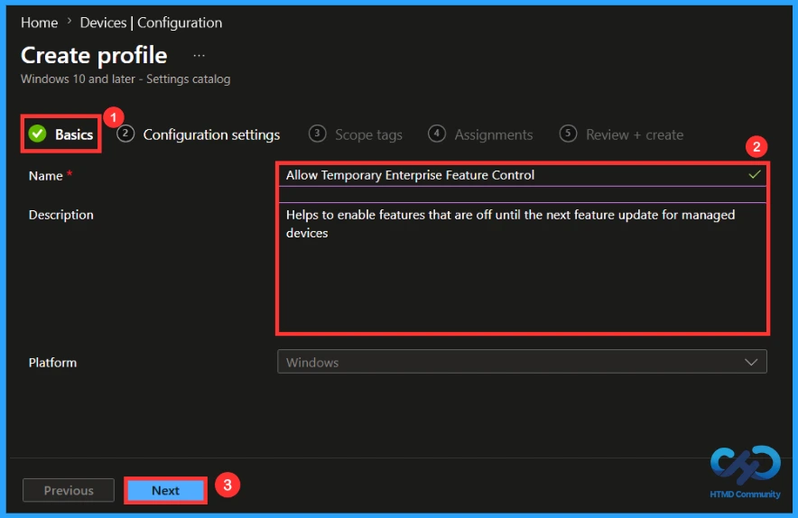
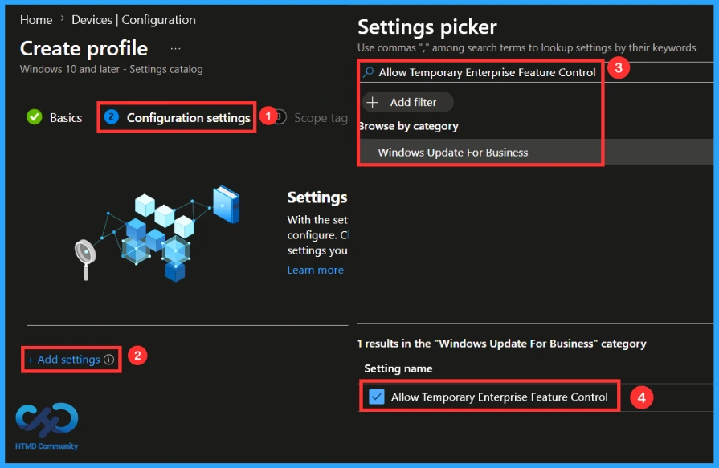
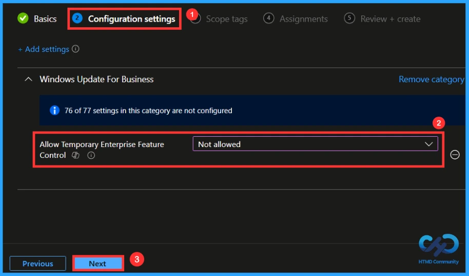
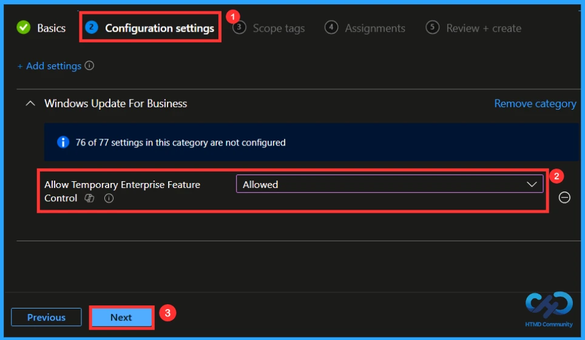
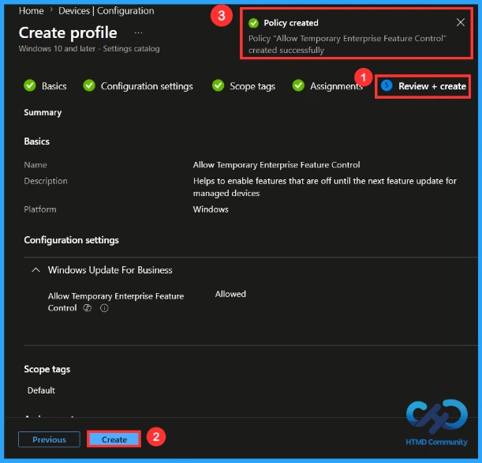
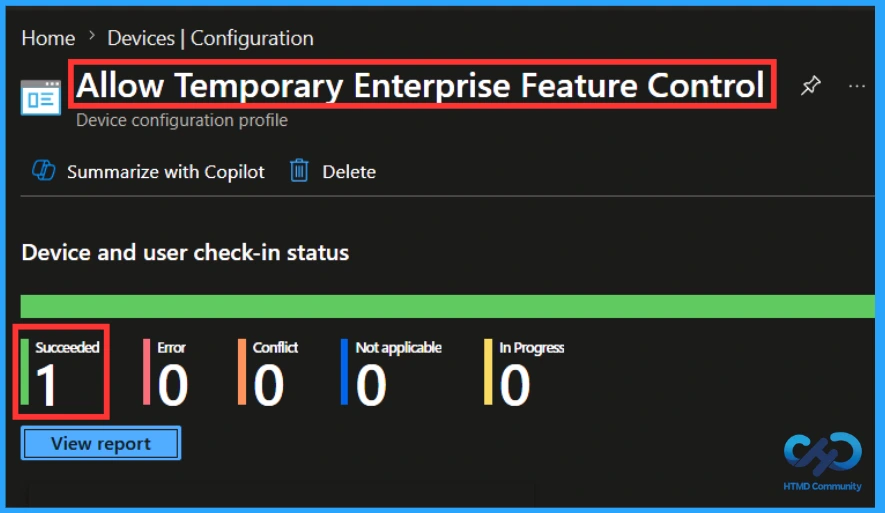
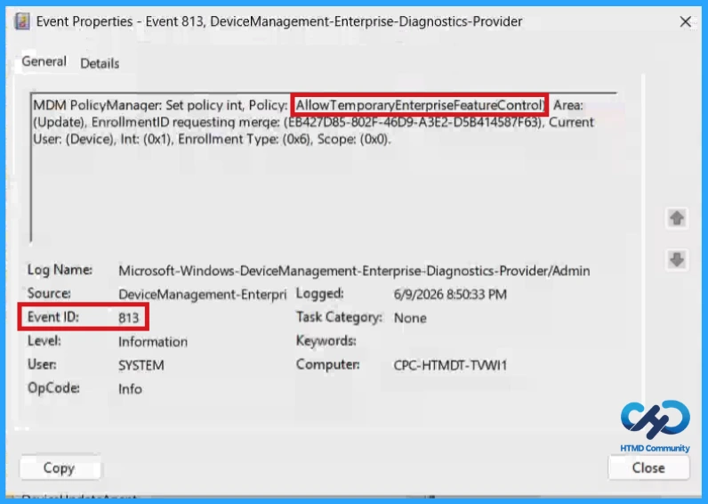
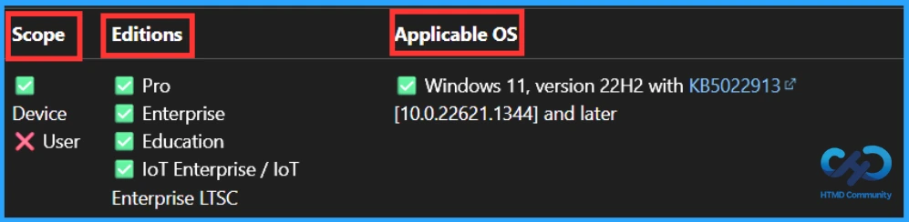
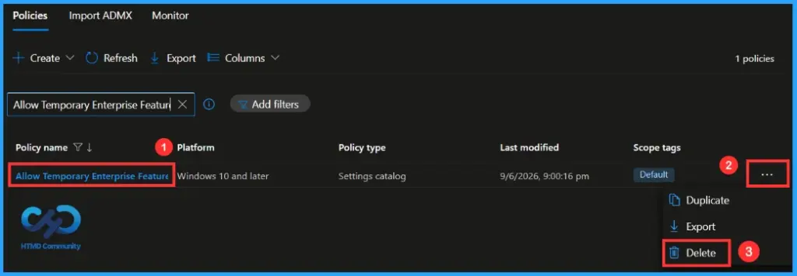
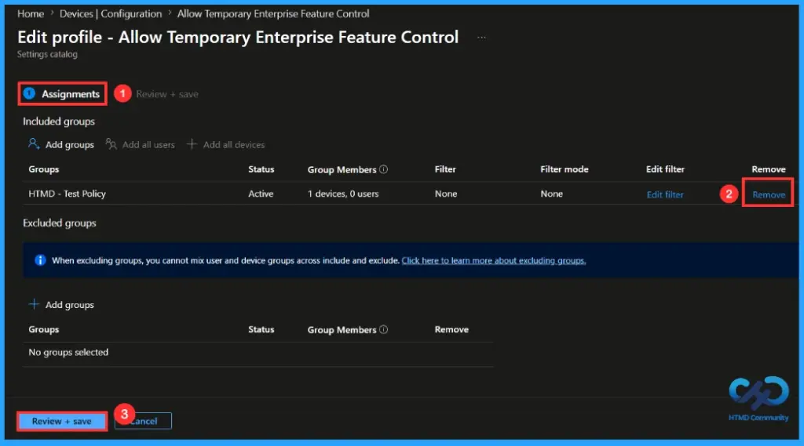

key Takeaways
- This policy controls the rollout of new Windows features on managed devices.
- Allows organizations to enable features before major Windows updates.
- Helps IT admins manage feature adoption more effectively.
- Supports testing of new features before wider deployment.
- Provides flexibility between innovation and stability.
Hey, let’s learn about How to Enable Upcoming Windows Features Early using Intune. This policy helps to control whether enterprise-managed Windows devices receive new features introduced through monthly quality updates before the next major feature update. Features introduced via servicing (outside of the annual feature update) are off by default for devices that have their Windows updates managed.
Table of Contents
What are the Advantages of this policy?
Allow Temporary Enterprise Feature Control enables or delays new Windows features delivered through monthly quality updates on managed enterprise devices.
1. Provides early access to new Windows features.
2. Improves productivity with the latest enhancements.
3. Gives IT admins greater control over feature rollout.
How to Enable Upcoming Windows Features Early using Intune
Through this policy organizations can choose whether new Windows features released through monthly updates are enabled immediately or kept disabled until a major Windows feature update is installed.
How to Create a Policy
First, you need to configure this policy. Start by signing in to the Microsoft Intune Admin Center. Then, click on Devices. Under the Devices section, go to the Configuration tab, where you will find a Create option. Click on it and select New policy.

Profile Creation in a Policy
This is the next step you need to take for Policy Creation. When creating a profile, you must select the platform and profile type. Here, I would like to configure the policy for Windows 10 and later Platforms and the Settings catalog profile. Then click on the Create button.

Basics Tab for Name and Description
Naming the policy is the primary step that helps admins to identify the policy later. This is an important and necessary step that allows you to know the purpose of the policy. Here, Name is mandatory and description is optional. After adding this click on the Next button.

How to Configure this Policy
On this configuration tab, click on Add settings to open the settings picker. In the Settings Picker, you can see numerous policy settings Here, I selected the policy by browsing the policy name, then you can see its Category, select the Category and enable the policy setting.

Default setting in this policy
By default the policy will be disabled. If this policy is set to “Not Configured” or “Disabled” then features that are shipped via a monthly quality update (servicing) will remain off until the feature update that includes these features is installed.

Enabling this Policy
If this policy is configured to “Enabled“, then all features available in the latest monthly quality update installed will be on. When enabled users get access to new Windows capabilities sooner. This helps organizations test and adopt new features faster. Here I would like to create the policy by enabling (Allow) then click Next to continue.

A Scope Tag in Intune is used to control visibility and access to Intune resources based on administrative roles. Scope tags are not mandatory. You can add the scope tag using the select Scope Tags button. Click Next to continue.

Assignments Tab to Add Group
On the assignments tab, you can select which users or devices get this policy. Under Include Groups, click Add Groups. From the list, select the group that you want to target (HTMD – Test Policy). Then click the Next button to continue.

Finalising the Policy
At the Review + Create step, you can review each tab to avoid misconfiguration or policy failure. After reviewing the details and making any necessary changes by clicking Previous. We click Create to finish, and a notification confirms that the allow temporary enterprise feature control policy has been created successfully.

Monitoring the Status of the Policy
You can check a policy’s status in the Intune portal. Generally, it takes 8 hours for policies to be created. By using the manual sync option, you can reduce the configuration delay in the company portal app on the device, then check the status again. Navigate to Devices > Configuration. Click on the specific policy to see its details.

Client-Side Verification
To confirm if a policy has been applied, use the Event Viewer on the client device. Go to Applications and Services Logs > Microsoft >Windows >Device Management > Enterprise Diagnostic Provider > Admin. From the list of policies, use the Filter Current Log option and search for Intune event 813.
MDM PolicyManager: Set policy int, Policy: (AllowTemporaryEnterpriseFeatureControl), Area:
(Update), EnrollmentID requesting merqe: (EB427D85-802F-46D9-A3E2-D5B414587F63), Current
User: (Device), Int: (0x1), Enrollment Type: (0x6), Scope: (0x0).

Configuration Service Provider (CSP)
The Policy Configuration Service Provider (CSP) is a feature used by organisations to manage and control settings on Windows 10 and 11 devices. It explains what each policy does, what settings or values can be used, and how it connects to older Group Policy settings (Group Policy Mapping details).
Description framework properties:
| Property name | Property value |
|---|---|
| Format | int |
| Access Type | Add, Delete, Get, Replace |
| Default Value | 0 |
Allowed values:
- 0 (Default) – Not allowed
- 1 – Allowed
Group policy mapping:
| Name | Value |
|---|---|
| Name | AllowTemporaryEnterpriseFeatureControl |
| Friendly Name | Enable features introduced via servicing that are off by default |
| Location | Computer Configuration |
| Path | Windows Components > Windows Update > Manage end user experience |
| Registry Key Name | Software\Policies\Microsoft\Windows\WindowsUpdate |
| Registry Value Name | AllowTemporaryEnterpriseFeatureControl |
| ADMX File Name | WindowsUpdate.admx |

How to Remove an Assigned Group from this Policy
If you need to remove a group from a policy assignment for security updates. Open the policy from the configuration tab and click on the edit button. Then, click on the Remove button. Click Review + Save after making the changes.
For detailed information, you can refer to our previous post – Learn How to Delete or Remove App Assignment from Intune using by Step-by-Step Guide.

How to Delete this Policy from Intune Portal
If you want to delete this policy for any reason, you can do it easily. First, search for the policy name in the configuration section. When you find the policy name, click the 3-dot menu next to it and tap the Delete option.
For more information, you can refer to our previous post – How to Delete Allow Clipboard History Policy in Intune Step by Step Guide.

Need Further Assistance or Have Technical Questions?
Join the LinkedIn Page and Telegram group to get the latest step-by-step guides and news updates. Join our Meetup Page to participate in User group meetings. Also, Join the WhatsApp Community and WhatsApp Channel to get the latest news on Microsoft Technologies. We are there on Reddit as well.
Author
Anoop C Nair has been Microsoft MVP from 2015 onwards for 10 consecutive years! He is a Workplace Solution Architect with more than 22+ years of experience in Workplace technologies. He is also a Blogger, Speaker, and Local User Group Community leader. His primary focus is on Device Management technologies like SCCM and Intune. He writes about technologies like Intune, SCCM, Windows, Cloud PC, Windows, Entra, Microsoft Security, Career, etc.